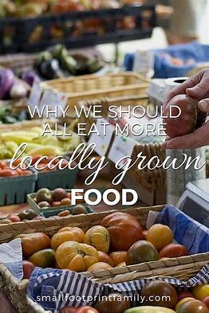
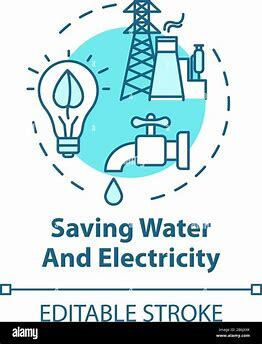

Here are some ways to support the environment.
Follow the 3 rs: reduce,reuse and recylcle.Reducing the amount of waste sent to landfills and incinerators. Conserving natural resources such as timber, water and minerals"Recycling" is the process of collecting and processing materials like paper, plastic, and glass so they can be turned into new products. It's a way to give old items a new life instead of sending them to the landfill.

Eat locally grown food, cut back on meat and dairy, and shop at the farmers market.But it's up to you to decide what buying local food means to you. Maybe it means foods grown and produced in your state or your region. Or maybe it means that it comes from farmers you know and can talk to — for example, at a farmer's market or through a CSA. And for some people, "local" is more about the values of small-scale and community-based than about a specific geographic configuration.
Make an effort to convserve water and electricity around the house.As homesteaders (in all our forms), we seek to change our lifestyle to become more sustainable, and part of living intentionally is conserving resources. Striving to conserve water and electricity in your Apartment Homestead should be a top priority. Why conserve? Because there are certain resources we absolutely cannot live without, and our homestead lifestyle is entirely unsustainable without them. For modern homesteaders, a key resource is water. We can't grow food, raise animals, or survive without water.
